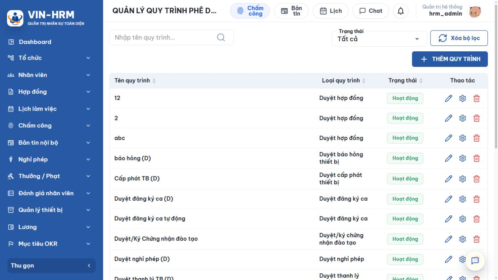
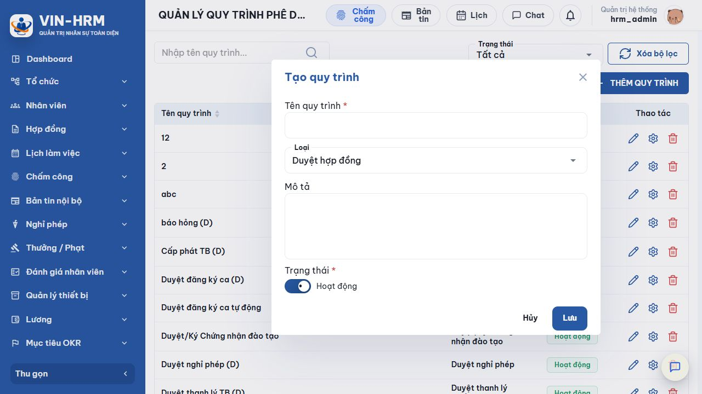
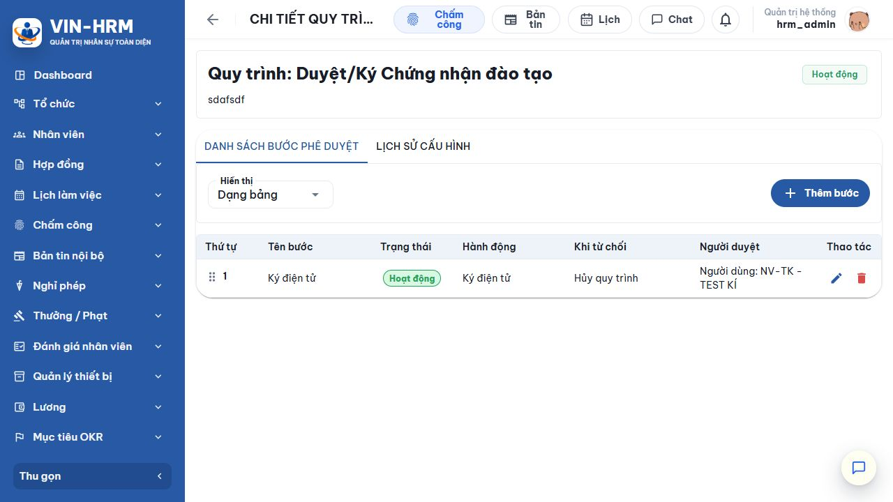
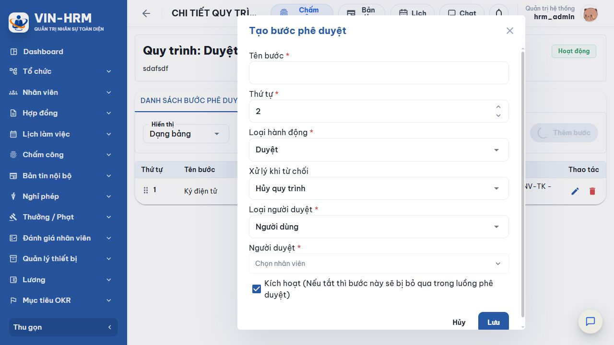
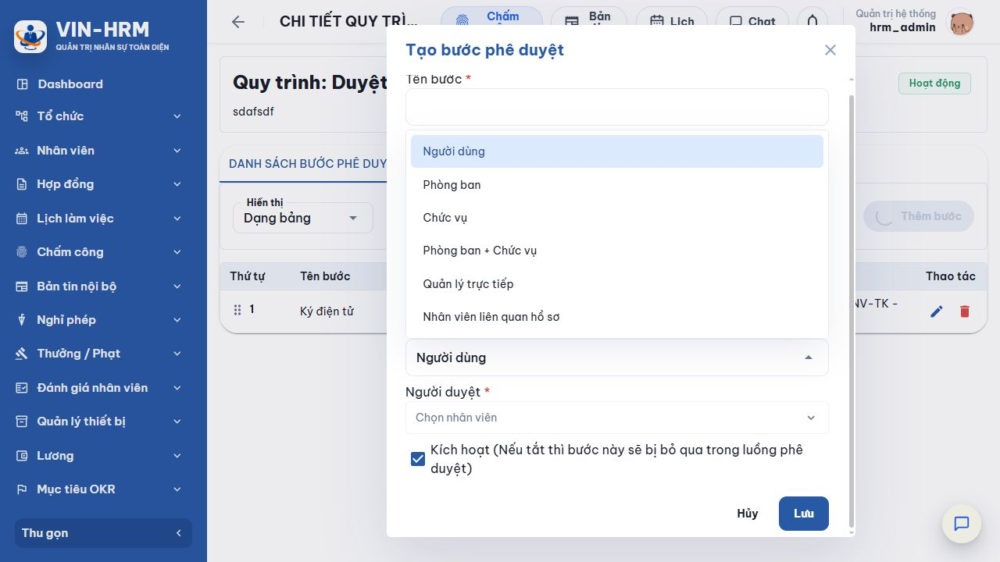

1. Mục đích và phạm vi
Quy trình phê duyệt là bản thiết kế các bước mà một hồ sơ phải đi qua trước khi được hoàn tất. Mỗi bước xác định việc cần làm, người được phép xử lý và hướng xử lý khi từ chối. Khi một hồ sơ nghiệp vụ bắt đầu chạy, hệ thống tạo một bản thực thi từ các bước đang kích hoạt của quy trình đã chọn.
Tài liệu này hướng dẫn người quản trị tạo quy trình, cấu hình bước, hiểu toàn bộ lựa chọn và kiểm tra các ràng buộc trước khi đưa vào sử dụng. Phạm vi áp dụng cho các nghiệp vụ hợp đồng, nghỉ phép, đăng ký ca, hủy OT, thưởng/phạt, đào tạo, bản tin và quản lý thiết bị đang được hỗ trợ trên hệ thống.
2. Truy cập chức năng
Mở Hệ thống → Quy trình phê duyệt. Tài khoản phải có quyền quản lý quy trình. Nếu không thấy chức năng hoặc không có nút tạo/sửa, liên hệ người quản trị phân quyền.

3. Đọc danh sách và sử dụng bộ lọc
| Thành phần | Ý nghĩa và cách sử dụng |
|---|---|
| Nhập tên quy trình | Tìm theo tên. Có thể nhập một phần tên; nên dùng từ khóa đặc trưng như “nghỉ phép”, “chứng nhận” hoặc “thiết bị”. |
| Trạng thái | Tất cả hiển thị mọi quy trình; Hoạt động là các quy trình có thể được chọn cho hồ sơ mới; Ngừng hoạt động dùng để tra cứu cấu hình cũ. |
| Xóa bộ lọc | Đưa từ khóa và trạng thái về mặc định rồi tải lại toàn bộ danh sách. |
| Tên quy trình | Tên nhận biết trong phạm vi doanh nghiệp. Tên phải duy nhất, nên mô tả rõ nghiệp vụ và phạm vi áp dụng. |
| Loại quy trình | Xác định mô-đun nghiệp vụ nào được phép dùng quy trình. |
| Thao tác | Biểu tượng bút để sửa thông tin; bánh răng để quản lý các bước; thùng rác để xóa khi dữ liệu cho phép. |
| Phân biệt “tên” và “loại” Tên giúp người dùng chọn đúng quy trình; loại quyết định hệ thống có đưa quy trình đó vào danh sách của một nghiệp vụ hay không. Hai quy trình có thể cùng loại nhưng không được trùng tên. |
4. Tạo một quy trình mới

- Chọn THÊM QUY TRÌNH.
- Nhập Tên quy trình, tối đa 200 ký tự. Dùng tên dễ phân biệt, ví dụ “Duyệt nghỉ phép khối văn phòng”.
- Chọn Loại đúng với nghiệp vụ sẽ sử dụng.
- Nhập Mô tả, tối đa 500 ký tự, để nêu phạm vi, đối tượng hoặc nguyên tắc đặc biệt.
- Giữ Trạng thái = Hoạt động nếu muốn dùng sau khi cấu hình đủ bước. Nếu đang chuẩn bị, nên tắt trạng thái và chỉ kích hoạt sau khi kiểm tra.
- Chọn Lưu. Sau đó mở biểu tượng bánh răng của quy trình để thêm các bước phê duyệt.
4.1. Ý nghĩa các loại quy trình
| Loại quy trình | Nghiệp vụ sử dụng |
|---|---|
| Duyệt hợp đồng | Duyệt hoặc ký hợp đồng lao động. Có thể kết hợp bước tải tài liệu, ký điện tử và ký số. |
| Duyệt nghỉ phép | Xử lý đơn nghỉ phép của nhân viên. |
| Duyệt tạm ứng lương | Dành cho nghiệp vụ tạm ứng lương. Chỉ chọn khi doanh nghiệp đã triển khai màn hình tạm ứng tương ứng. |
| Duyệt đăng ký ca | Xử lý đề nghị đăng ký hoặc thay đổi ca làm việc. |
| Duyệt hủy OT | Xử lý đề nghị hủy thời gian tăng ca. |
| Duyệt đề nghị thưởng/phạt | Xử lý đề nghị điều chỉnh thưởng hoặc phạt trước khi ghi nhận. |
| Duyệt/ký chứng nhận đào tạo | Duyệt, ký và phát hành chứng nhận đào tạo; có thể ký trên chứng nhận do hệ thống sinh. |
| Duyệt bản tin | Duyệt nội dung bản tin nội bộ trước khi xuất bản. |
| Phê duyệt đăng ký khóa học | Duyệt yêu cầu tham gia khóa học. Loại này chỉ hỗ trợ hành động Duyệt. |
| Duyệt cấp phát thiết bị | Duyệt phiếu cấp phát thiết bị cho nhân viên. |
| Duyệt điều chuyển thiết bị | Duyệt việc chuyển thiết bị giữa nhân viên, bộ phận hoặc địa điểm. |
| Duyệt thu hồi thiết bị | Duyệt phiếu thu hồi thiết bị. |
| Duyệt báo hỏng thiết bị | Duyệt báo cáo thiết bị hư hỏng. |
| Duyệt báo mất thiết bị | Duyệt báo cáo mất thiết bị. |
| Duyệt thanh lý thiết bị | Duyệt đề nghị thanh lý thiết bị. |
| Không kích hoạt quy trình chưa có bước Một quy trình cần ít nhất một bước đang kích hoạt mới có thể chạy. Tạo phần đầu chỉ mới khai báo tên và loại; phải cấu hình bước, người duyệt và thử nghiệm trước khi đưa vào nghiệp vụ. |
5. Quản lý danh sách bước phê duyệt
Tại danh sách quy trình, chọn biểu tượng bánh răng. Trang chi tiết hiển thị tên, trạng thái, mô tả và hai thẻ: Danh sách bước phê duyệt và Lịch sử cấu hình.

| Thành phần | Ý nghĩa |
|---|---|
| Thứ tự | Trình tự xử lý từ nhỏ đến lớn. Chỉ bước đang kích hoạt được đưa vào bản thực thi của hồ sơ. |
| Dạng bảng | Phù hợp khi cần đọc đầy đủ các cột, sửa, xóa hoặc sắp xếp bước. |
| Dạng workflow | Hiển thị luồng trực quan để kiểm tra thứ tự và mối nối giữa các bước. |
| Lịch sử cấu hình | Ghi lại thời gian, người thực hiện, thao tác cùng giá trị cũ và mới khi tạo, sửa hoặc xóa quy trình/bước. |
| Thêm bước | Mở biểu mẫu tạo bước tiếp theo. Thứ tự mặc định là vị trí tiếp theo sau các bước hiện có. |
6. Thêm và cấu hình một bước

- Chọn Thêm bước, nhập Tên bước tối đa 200 ký tự.
- Nhập Thứ tự là số nguyên dương và không trùng bước khác trong cùng quy trình.
- Chọn Loại hành động, sau đó hoàn thành các trường xuất hiện theo loại đã chọn.
- Chọn cách Xử lý khi từ chối.
- Chọn Loại người duyệt và chỉ định nguồn người duyệt.
- Giữ Kích hoạt nếu bước phải chạy. Khi tắt, bước được lưu để tham khảo nhưng bị bỏ qua trong hồ sơ mới.
- Chọn Lưu, rồi kiểm tra lại toàn bộ thứ tự và các bước tham chiếu.
6.1. Loại hành động
| Lựa chọn | Ý nghĩa và điều kiện sử dụng |
|---|---|
| Duyệt | Người có thẩm quyền chấp thuận hoặc từ chối hồ sơ. Với phê duyệt đăng ký khóa học, đây là hành động duy nhất được hỗ trợ. |
| Ký điện tử | Người xử lý ký điện tử lên tài liệu. Phải chọn tài liệu từ một bước tải lên trước đó có đánh dấu dùng để ký; riêng chứng nhận đào tạo có thể dùng tài liệu do hệ thống sinh. |
| Ký số | Người xử lý ký số lên tài liệu. Nguồn tài liệu phải đến từ bước trước và thứ tự ký số phải đứng sau toàn bộ bước ký điện tử. |
| Upload tài liệu | Yêu cầu tải tài liệu lên hồ sơ. Có thể bật Upload tài liệu để ký để làm nguồn cho bước ký phía sau. Hành động này không có thao tác từ chối. |
6.2. Xử lý khi từ chối
| Lựa chọn | Kết quả |
|---|---|
| Hủy quy trình | Kết thúc luồng hiện tại theo trạng thái bị từ chối; hồ sơ không chuyển sang bước tiếp theo. |
| Quay về bước trước | Đưa hồ sơ trở lại một bước đang kích hoạt có thứ tự nhỏ hơn. Chỉ các bước hợp lệ ở phía trước mới xuất hiện để chọn. |
| Đối với Upload tài liệu | Không cấu hình từ chối; hệ thống xóa lựa chọn bước quay lại vì thao tác tải lên không hỗ trợ quyết định từ chối. |
6.3. Loại người duyệt

| Lựa chọn | Ý nghĩa và trường cần khai báo |
|---|---|
| Người dùng | Chỉ định một nhân viên cụ thể. Dùng khi trách nhiệm cố định cho một cá nhân; cần cập nhật khi người đó đổi nhiệm vụ hoặc ngừng làm việc. |
| Phòng ban | Cho phép người thuộc phòng ban đáp ứng quyền xử lý. Chọn phòng ban cụ thể hoặc lấy phòng ban đang làm việc của nhân viên nguồn. |
| Chức vụ | Cho phép người giữ một chức vụ đang hoạt động xử lý. Hệ thống không chấp nhận chức vụ ngừng hoạt động. |
| Phòng ban + Chức vụ | Người xử lý phải đồng thời thuộc đúng phòng ban và giữ đúng chức vụ. Cách này giúp thu hẹp phạm vi chính xác hơn. |
| Quản lý trực tiếp | Lấy quản lý trực tiếp của nhân viên liên quan hồ sơ hoặc của nhân viên được xác định tại một bước trước đang kích hoạt. |
| Nhân viên liên quan hồ sơ | Cho phép nhân viên gắn trực tiếp với hồ sơ nghiệp vụ xử lý, phù hợp khi chủ thể hồ sơ cần xác nhận hoặc bổ sung thông tin. |
6.4. Các trường phụ thuộc xuất hiện theo lựa chọn
| Trường | Cách hiểu |
|---|---|
| Tài liệu ký | Chọn một bước Upload tài liệu đang kích hoạt, đứng trước bước ký và đã đánh dấu là tài liệu để ký. Không thể lấy tài liệu từ bước phía sau. |
| Upload tài liệu để ký | Đánh dấu tài liệu tải lên là nguồn đầu vào cho bước ký điện tử/ký số phía sau. |
| Nguồn phòng ban - Chọn phòng ban cụ thể | Người cấu hình chọn trực tiếp một phòng ban cố định. |
| Nguồn phòng ban - Phòng ban đang làm việc | Hệ thống xác định phòng ban hiện tại của nhân viên nguồn; nguồn có thể là nhân viên hồ sơ hoặc nhân viên ở một bước trước đang kích hoạt. |
| Quản lý trực tiếp của | Xác định nhân viên dùng để tìm quản lý: nhân viên hồ sơ hoặc nhân viên được xác định tại một bước trước. |
| Kích hoạt | Bật: bước được sao chép vào hồ sơ mới. Tắt: bước bị bỏ qua, nhưng vẫn còn trong cấu hình và lịch sử. |
7. Các quy tắc vận hành bắt buộc
| Quy tắc | Giải thích |
|---|---|
| Ít nhất một bước hoạt động | Không được tắt hoặc xóa bước hoạt động cuối cùng của quy trình. |
| Thứ tự duy nhất | Mỗi bước có một số thứ tự riêng. Khi sắp xếp lại, hệ thống chuẩn hóa thứ tự và kiểm tra lại toàn bộ tham chiếu. |
| Nguồn phải đứng trước | Bước dùng làm nguồn tài liệu, nguồn nhân viên, nguồn phòng ban hoặc đích quay lại khi từ chối phải đứng trước và đang hoạt động. |
| Ký điện tử trước ký số | Tất cả bước ký điện tử phải nằm trước các bước ký số để bảo đảm chuỗi ký đúng thứ tự. |
| Không xóa bước đang được tham chiếu | Phải đổi tài liệu ký, bước quay lại, nguồn quản lý hoặc nguồn phòng ban ở các bước phụ thuộc trước khi xóa bước nguồn. |
| Không xóa nguồn tài liệu ký | Bước Upload tài liệu để ký không thể xóa khi còn bước ký phía sau đang dùng tài liệu đó. |
| Chỉ sao chép bước đang hoạt động | Khi hồ sơ bắt đầu, hệ thống tạo bản thực thi từ các bước đang bật; bước đầu chờ xử lý, các bước sau chờ đến lượt. |
| Cẩn trọng khi thay đổi quy trình đang được sử dụng Nếu hệ thống hiển thị xác nhận cập nhật các quy trình đang diễn ra về ban đầu, chỉ đồng ý sau khi đã đánh giá hồ sơ bị ảnh hưởng và thông báo cho người xử lý. Việc đặt lại có thể làm hồ sơ đang chạy quay về bước đầu. |
8. Sửa, ngừng hoạt động và xóa
| Thao tác | Nguyên tắc |
|---|---|
| Sửa quy trình | Có thể đổi tên, loại, mô tả và trạng thái. Tên mới vẫn phải duy nhất trong doanh nghiệp. |
| Sửa bước | Có thể đổi tên, thứ tự, hành động, cách từ chối và người duyệt; mọi phụ thuộc phải tiếp tục hợp lệ sau khi lưu. |
| Ngừng hoạt động | Dùng khi không muốn quy trình xuất hiện cho hồ sơ mới nhưng vẫn cần giữ cấu hình và lịch sử. Đây là lựa chọn an toàn cho quy trình đã từng sử dụng. |
| Xóa quy trình | Không thể xóa nếu có hồ sơ đang chạy hoặc quy trình đã từng được sử dụng. Khi đó hãy chuyển sang Ngừng hoạt động. |
| Xóa bước | Không thể xóa bước duy nhất, bước hoạt động cuối cùng hoặc bước đang được bước khác tham chiếu. |
9. Lịch sử cấu hình
Thẻ Lịch sử cấu hình giúp truy vết thay đổi. Mỗi dòng cho biết thời gian, người thao tác, hành động, giá trị cũ và giá trị mới. Khi phát hiện luồng chạy khác dự kiến, hãy kiểm tra lịch sử trước khi sửa để xác định thay đổi nào đã xảy ra.
10. Mô-đun sử dụng và cấu hình liên quan
Quy trình không tự gắn vào mọi hồ sơ chỉ nhờ trạng thái Hoạt động. Mô-đun nghiệp vụ lấy danh sách quy trình hoạt động đúng loại, sau đó người dùng hoặc cấu hình nghiệp vụ chọn đúng quy trình cho hồ sơ. Vì vậy cần kiểm tra cả hai phía: quy trình và màn hình nghiệp vụ.
| Nhóm mô-đun | Nội dung cần kiểm tra |
|---|---|
| Hợp đồng | Quy trình đúng loại Duyệt hợp đồng; nếu có ký, phải có nguồn tài liệu hợp lệ và đúng thứ tự ký. |
| Nghỉ phép, đăng ký ca, hủy OT | Quy trình hoạt động đúng loại; người duyệt có quyền tương ứng và thuộc đúng phạm vi phòng ban/chức vụ. |
| Thưởng/phạt | Chọn loại Duyệt đề nghị thưởng/phạt; kiểm tra người duyệt có quyền phê duyệt thưởng/phạt. |
| Đào tạo và bản tin | Chọn đúng loại chứng nhận, đăng ký khóa học hoặc bản tin. Đăng ký khóa học chỉ dùng hành động Duyệt. |
| Thiết bị | Mỗi nghiệp vụ cấp phát, điều chuyển, thu hồi, báo hỏng, báo mất và thanh lý có một loại riêng; không dùng lẫn loại. |
| Cấu hình hệ thống liên quan Chức năng không phụ thuộc một khóa cấu hình chung bắt buộc tại Hệ thống → Cấu hình. Tuy nhiên, kết quả xác định người duyệt phụ thuộc dữ liệu nhân viên, công việc, phòng ban, chức vụ, quản lý trực tiếp và phân quyền. Các dữ liệu này phải còn hoạt động và được khai báo đúng. |
11. Lỗi thường gặp và cách xử lý
| Hiện tượng/Thông báo | Cách xử lý |
|---|---|
| Tên quy trình đã tồn tại | Đổi tên để thể hiện rõ phạm vi; không dùng lại tên của quy trình khác trong doanh nghiệp. |
| Không có bước hoạt động | Bật ít nhất một bước và bảo đảm bước có người duyệt hợp lệ. |
| Thứ tự đã được sử dụng | Nhập số khác hoặc sắp xếp lại danh sách bước. |
| Không chọn được tài liệu ký | Tạo một bước Upload tài liệu ở phía trước, bật Upload tài liệu để ký và giữ bước đó hoạt động. |
| Thứ tự ký không hợp lệ | Đưa toàn bộ bước ký điện tử lên trước bước ký số. |
| Không xóa được bước | Kiểm tra đây có phải bước duy nhất/bước hoạt động cuối cùng hoặc đang là nguồn của bước khác; gỡ tham chiếu trước. |
| Không xóa được quy trình | Dừng hoặc xử lý xong hồ sơ đang chạy; nếu quy trình đã từng dùng, chuyển sang Ngừng hoạt động. |
| Người cần duyệt không thấy hồ sơ | Kiểm tra quyền nghiệp vụ, trạng thái nhân viên/chức vụ, phòng ban, quản lý trực tiếp và loại người duyệt của bước hiện tại. |
12. Danh sách kiểm tra trước khi đưa vào sử dụng
- Tên quy trình rõ ràng, loại nghiệp vụ chính xác và trạng thái phù hợp.
- Có ít nhất một bước đang hoạt động; thứ tự liên tục, không trùng.
- Mỗi bước có hành động, cách từ chối và người duyệt đúng mục đích.
- Mọi nguồn tài liệu, nguồn nhân viên, nguồn phòng ban và bước quay lại đều nằm ở phía trước.
- Bước ký điện tử đứng trước bước ký số; tài liệu ký đã được đánh dấu đúng.
- Nhân viên, phòng ban, chức vụ và quản lý trực tiếp đang hoạt động; quyền xử lý đã được cấp.
- Đã mở Dạng workflow để kiểm tra trực quan và xem Lịch sử cấu hình.
- Đã chạy thử một hồ sơ mẫu, gồm cả trường hợp duyệt, từ chối và quay lại bước trước.